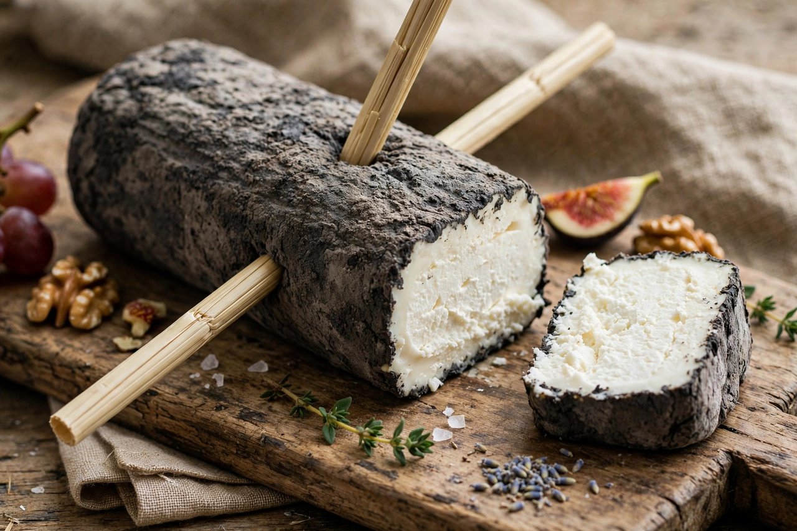

From Wikipedia, the free encyclopedia

| Sainte-Maure de Touraine | |
|---|---|
| Country of origin | France |
| Region | Touraine (Indre-et-Loire), Loire Valley |
| Milk source | Goat |
| Texture | Soft, smooth, becoming denser with age |
| Aging time | Minimum 10 days |
| Certification | AOC 1990; PDO (AOP) since 1996 |
| Weight | c. 250 g per log |
Sainte-Maure de Touraine is a French goat's-milk cheese made in the Touraine region of the Loire Valley, taking its name from the commune of Sainte-Maure-de-Touraine in the department of Indre-et-Loire. One of France's best-known chèvres, it is shaped as a small truncated log, coated in salted charcoal ash, and pierced lengthwise by a strand of rye straw (la paille) that is its trademark. The cheese has held Appellation d'Origine Contrôlée (AOC) status since 1990 and EU Protected Designation of Origin (PDO/AOP) status since 1996.
The cheese is made from raw or pasteurised whole goat's milk, gently curdled with a small amount of rennet over a long, slow lactic coagulation (at least 18 hours). The fragile curd is ladled by hand into long truncated-cone moulds, drained without pressing, then unmoulded, salted, and rolled in vegetable ash (traditionally powdered charcoal mixed with salt). Each log is pierced with a piece of rye straw — engraved, in the case of certified production, with the producer's identification — which originally served to strengthen the fragile young cheese, help it keep its shape, and aid aeration during ripening. Ripening (affinage) lasts a minimum of 10 days from renneting, during which a grey-blue, wrinkled rind develops (from Geotrichum candidum and moulds growing through the ash) and the paste progresses from moist and chalky at the centre to smooth and dense.
A mature Sainte-Maure weighs about 250 g and measures roughly 16–17 cm long. The flavour develops from mild, lactic, and faintly goaty when young to fuller, nuttier, and more piquant with age, sometimes with notes of walnut and hay; the texture beneath the rind becomes creamy while the core stays fine and compact. It is eaten as part of a cheese course, sliced (with the straw removed) and often warmed on toast in a salade de chèvre chaud, and pairs classically with the white wines of the Loire — Sauvignon blanc from Touraine or Sancerre, or a Vouvray.
Goat-rearing in Touraine is traditionally dated to the early Middle Ages — local legend credits the Arab incursions of the 8th century and the settlement of Saracen prisoners after the Battle of Tours (732) with introducing goats and cheesemaking to the region. Farmhouse production of the log-shaped cheese is documented for centuries around Sainte-Maure's markets, held since the Middle Ages. AOC protection in 1990 codified the production zone (the former province of Touraine), the use of goats of the Alpine, Saanen, and Poitevine breeds and their crosses, traditional ladle-moulding, and the straw. Both farmhouse (fermier) and dairy (laitier) versions exist; annual production runs to well over a thousand tonnes, making it one of the Loire's flagship goat cheeses alongside Selles-sur-Cher, Pouligny-Saint-Pierre, Crottin de Chavignol, and Valençay — the celebrated family of Loire Valley chèvres.